Basics
A decent quality — read that as efficient — HF mobile antenna is not an inexpensive commodity, and may cost upwards of $1,200 (although lesser quality ones are about half this amount). Assuming you spent this much for yours, why would you mount it in an inefficient manner? Yet this is the case 90% of the time. It pays to remember that antenna efficiency is a balancing act between the various system losses. Even one ohm of additional resistive loss anywhere in the system can make a significant difference in the signal-to-noise ratio on both ends of the contact. Thus the antenna should be attached in such a way to maximize what little ground plane a vehicle represents. The key phrase is: it is the metal mass directly under the antenna, not what's alongside, that counts.
Another often-overlooked requirement is which side of the vehicle the antenna should be mounted on. Here in America, we drive on the right and steer from the left, so we should choose the left side. This can be very important especially when you live in an area with low bridges and overhanging trees, as there is more clearance toward the center of the street. It is also easier to see the antenna in the rear view mirror, and it is less likely to be twanged when you're parallel parked. If you've chosen front mounting — as many folks who pull trailers do — mount it to the right into your peripheral vision to avoid distraction.
Minivans, SUVs, RVs, Jeeps, station wagons, crossovers, and plastic-skinned vehicles present a special case. Except for front mounting, the body of these vehicles shadows a large portion of the antenna. This causes tuning problems and reduces efficiency, which is already poor at best. If shadowing cannot be avoided, make sure the coil is as far away from sheet metal as possible to minimize coil losses.
Pickup truck owners should mount the antenna close to one end of the mounting area rather than dead center. Mounted dead center, you have to get into the bed to remove the whip or cap hat before entering a garage. Mounting near one edge solves this without any performance penalty.
Maximizing what little ground plane a vehicle offers is a worthwhile endeavor. Bonding is part of the solution. Shadowing is also important, and so is mounting height. As we raise an HF antenna from low on the bumper toward the roof, the resonance frequency decreases. Part of this decrease is due to a decrease in ground losses; however, capacitive coupling between the antenna and the surface under the vehicle causes most of the effect. The change in resonance is typically between 1% and 3%. These factors will also cause a decrease in the input impedance, which is a good thing even though the unmatched SWR might increase.
There is a drawback to increased height. From a safety and practical standpoint, the maximum height is from 11 to 16 feet depending on your area. In the desert southwest, there is little trouble with the antenna tip extending to 16 feet. In the New England area, 11 or 12 feet is about the limit. The only rule of thumb is: mount it as high as your terrain and antenna length will allow, up to the point of striking low-hanging wires, branches, bridges, and parking garages.
More and more new vehicles are equipped with side curtain SRS air bag devices. Some are mounted along the edges of the headliner, including the rear seat area. The wiring to these devices may be routed through any one or more of the roof pillars. Extra care is required when installing antennas on vehicles so equipped. If you are the least bit apprehensive about your installation, seek professional help from your dealer or a qualified installer.
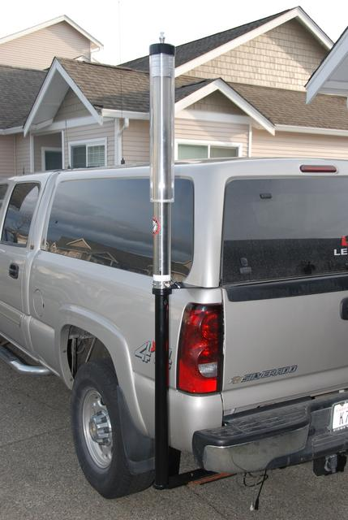
Foreword on Mounting
The type of mount you use is dictated by several conditions. The main one centers around one's feelings about drilling holes in a vehicle's body. While there are ways around the issue, they often require fabricating special brackets — apparently a lost art. This fact is why so many newcomers to the hobby opt for short, stubby antennas to avoid the issue. However, short, stubby antennas have their own set of problems, not the least of which is poor efficiency and excessive common mode current.
The size, weight, and length of the antenna — and to a lesser degree aesthetics and spousal approval — are also issues which need to be considered. Heavy antennas like the Scorpion 680 require additional thought and preparation if their extra efficiency is to be exploited. Overall length is important too, especially if your area is highly forested. If it is, cap hats are a viable alternative to length, but only if you're willing to opt for a well-mounted, heavy, and sturdy antenna.
Let's face a fact of life: mobile antennas aren't what most folks would call pretty. Some, in fact, are just plain ugly. Your spouse may not like what he or she sees, but remember this — form follows function. If you opt for an antenna that looks pretty and doesn't require drilling holes, you're going to be less than satisfied in the long run.
If you've read the Antenna Efficiency article, you know why minimizing ground loss is so important. But if you think a ground strap to the nearest hard point on your vehicle will negate poor mounting, you're wrong. A ground strap is not a substitute for proper mounting location.
Mag Mounts
There are many reasons to permanently install any mobile antenna. Aside from maximizing performance by minimizing ground and shunt capacitance losses, there is the safety issue should the antenna come unstuck. Further, some insurance companies will not cover antennas which are not permanently installed. These facts preclude the use of mag mounted antennas.
When mag mounts are demonstrated in retail outlets, they're stuck to a thick chunk of metal. Since the sticking force is reliant on the thickness of the material, the actual force will be much less when sitting atop your vehicle. It doesn't make much difference how many magnets they have or how big they are — they will become flying missiles in the event of a crash.
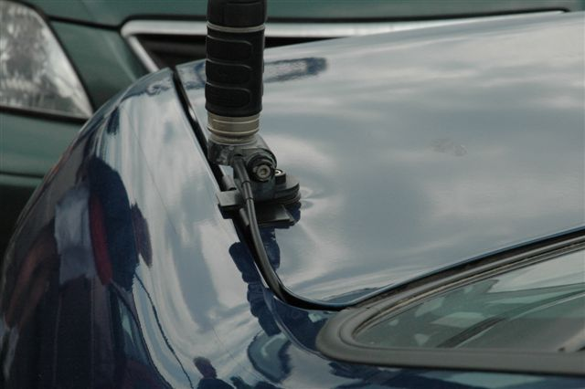
There are two more problems users should be aware of. First, they collect road debris — mainly metallic brake dust — which eventually gets between the magnet and the sheet metal. Secondly, the base cover, usually rubberized plastic, has an affinity for clear coat vehicle finishes. It is a given that the surface under the mag mount will become both scratched and/or discolored over time. In some cases, in less than a week.
Posters to several online forums suggest removing mag mounts periodically to wipe off collected debris. This really doesn't help much. The particles are almost colloidal in size — they actually penetrate the pores of the mag mount material and the paint under it. Moisture mixes with these minute-sized particles and other pollutants, forming a mild acid (typically sulfuric). It is the acid that discolors the paint, not necessarily the rusting particles of brake dust. If you think yours is clean, here's a simple test: pull the magnet across a piece of plate glass and see what happens.
The bottom line on mag mounts: if you have resorted to one, you haven't thought long enough about other, safer, more efficient mounting methods. No amount of cleaning, repositioning, or bonding will make a mag mount an acceptable permanent antenna solution.
Ballmounts
Nowadays, most ballmounts aren't worth the effort. The most commonly sold type consists of two stamped stainless steel half spheres, separated by a rolled steel ferrule, with a cheap plastic insulator and thin backing plate. Note the teeth at the bottom of the ball — they're supposed to keep it from rotating. They don't. If you tighten the cross bolt enough to hold the antenna upright, the ferrule will unroll and your antenna will flop over. If your antenna weighs more than 2 pounds, forget about this type of mount.
There is one all-brass ballmount available made by Breedlove Machine Shop. They come with and without a quick disconnect. The ball itself is pinned to prevent rotation, making for a very secure fit. One version includes an SO-239 built as part of the center stud attachment bolt, making the coax connection very secure. Breedlove also makes a ballmount with an SO-239 connector fed with a short piece of RG-58U, ideal for import antennas which use this type of mounting.
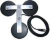
Bed, Clamp, Clip, Lip, Seam, and Trunk Mounts
There are several things to keep in mind when using any non-permanent mount, no matter how they attach. First, the mount is no better than the vehicle sub-structure it is clamped to. A typical example is a roof rack — most are not DC grounded to the body of the vehicle, and even when they are, they still represent a poor ground plane even at UHF.
Seam mounts (often called L-brackets or gap-mounts) are almost a thing of the past due in part to minimal seam clearances on modern vehicles. They may still be used in some cases (hood area), but some provision must be made to allow clearance for the coax cable — a difficult task.
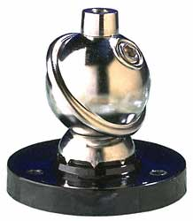
Clamp mounts like the K400 might save you from drilling a visible hole in sheet metal, but they can still cause body damage. Since the return path for the coax relies on the integrity of the hinges and the mounting set screws, they also increase ground losses. Adding insult, most clip mounts come equipped with a preinstalled RG-174U coax assembly, usually 10 feet long. At 30 MHz, the loss averages about 0.5 dB, increasing to about 1 dB at 150 MHz, and almost 4 dB at 450 MHz. Add in some ground loss and some impedance mismatch, and the total loss attributed to a clip mount can easily double these figures.
There is another problem with hatches and rear doors. Most hatches have defroster grid wires, a center high-mounted stop lamp (CMHSL), and sometimes even wipers. Since these hatches offer a poor ground return for RF current, a goodly portion of that current ends up being induced into the vehicle's wiring. This causes all manner of RFI problems, and because the wiring is difficult to access, it is nearly impossible to use ferrite material to overcome the problem. Motor lead and coax chokes must be mounted outside the vehicle to minimize RFI. Due to the way clip mounts are designed, choking the coax is nearly impossible.
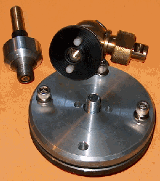
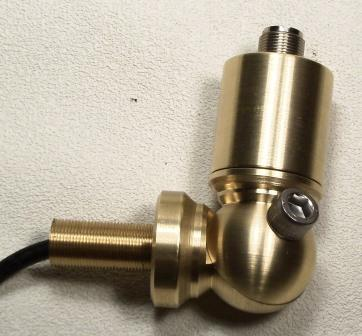
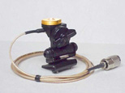
Foldover Mounts
Foldover mounts have been with us for some time, although they're not a fit for all installations. In some cases, a quick disconnect is a better choice. Breedlove has introduced a Scorpion super-duty foldover mount capable of supporting antennas as large as 20 pounds. It's machined out of 2.5-inch square aluminum and accepts a 3/4x10 mounting stud. While designed specifically for the Scorpion, it is adaptable to antennas which use the standard 3/4x24 thread style via a slip-in adapter.
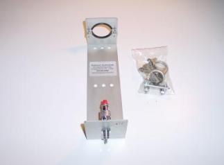
Quick Disconnects
Hustler, Breedlove Machine Shop, and others sell whip quick disconnect (QD) units. The Breedlove screw-on ones are preferable because they're more secure and make better electrical contact. The bayoneted ones supplied by Hustler tend to become loose over time, especially when used at the bottom of the antenna. If you're using a QD and having intermittent receive issues, the QD is the first place to look.
Some are plated brass, and some are stainless steel. The few made of pot metal aren't worth the effort. Breedlove also makes a combination foldover/quick disconnect that is clever in design — it screws together firmly with less flex than a traditional foldover.
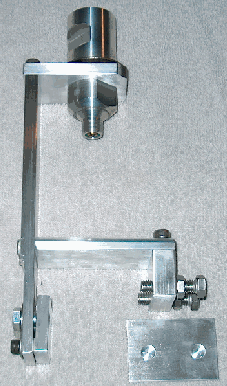
Home Brew Mounts
When you cannot find what you need or want, one way out is to home brew your own. Mounts made from Delrin plastic are an excellent choice. Delrin in its natural color is RF transparent up to the SHF region. The black, fiberglass-reinforced material is good to about 1 GHz. The main drawback is cost — current prices for 1-inch material run about $100 per square foot, though remnants purchased from plastics suppliers can reduce this significantly.
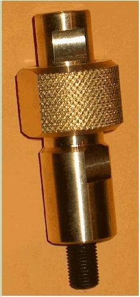
Delrin can be sawed, drilled, tapped, planed, and sanded with standard hand tools. It is very slick — almost as slick as Teflon — so clamp your work carefully when drilling. For holes larger than 3/8 inch, use a Forstner or spade bit. Go slow to avoid melting the material.
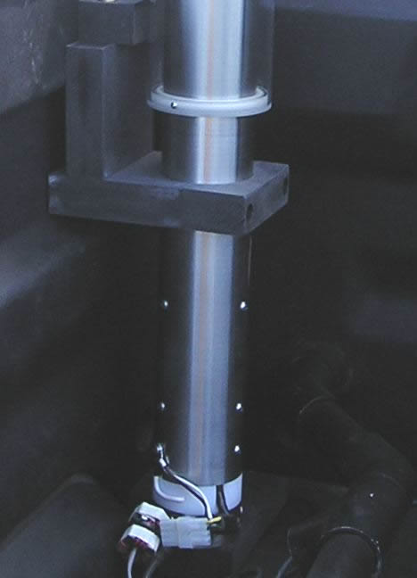
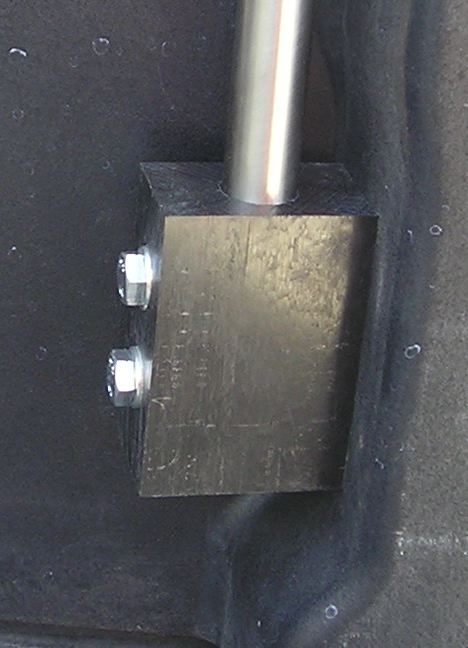
Pocket Mounts
Breedlove Machine Shop makes a variety of stake pocket mounts. One designed for the Border Patrol will slip under most bed covers and is adaptable to most antenna mounting styles, allowing the coax to feed through the bottom of the stake pocket. Visit their website for more information.
There are others who make stake pocket mounts, but most utilize a rubber block squeezed by a mounting bolt and rely solely on friction to hold them in place. Do not trust a friction-based stake pocket mount to hold anything more than a small VHF antenna.
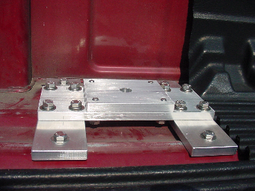
Post Mounts
Post mounts are handy for mounting antennas on flat surfaces like a truck bed or side rail. However, extending them to place the antenna higher is counter-productive, as doing so greatly increases ground losses.
The consensus of opinion is that raising the antenna to the top of a tall post will increase efficiency by unshadowing the mast and coil. This premise is incorrect. The post raises the antenna above its ground plane, hence increasing losses, not decreasing them. The ground plane must be directly under the antenna. Extending a post moves the antenna away from it.
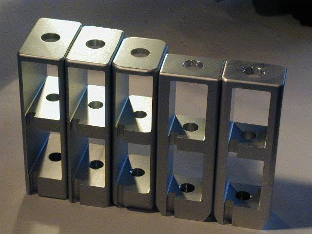
Springs and Guys
When using a body-mounted ballmount, springs are virtually a prerequisite. The spring helps prevent damage from low-hanging branches and the ever-present antenna twangers who cannot resist playing with your equipment. Most amateurs don't use springs at the base of their antenna because they believe it causes SWR to vary while underway. If this is the case, chances are the antenna is mounted too low and/or too close to the body.
Although guying has some safety benefits and allows the use of a lighter spring, guying is not a substitute for proper mounting. If you have to resort to guying to keep your antenna in place, you haven't properly installed your antenna. Fishing line stretches too much; Phillystrand is a better option. Attach the guy below the coil where the voltage is less. Regardless of the material used, moisture can collect on or in it — transmitting when it's wet will net you a burned guy, high SWR, or both.
Trailer Hitch Mounts
If you plan on using a trailer hitch as an antenna mount, have a second hitch ball receiver welded on the left end of the hitch. Then a short chunk of square tubing may be used as the actual mount, and it is easy to remove when necessary.
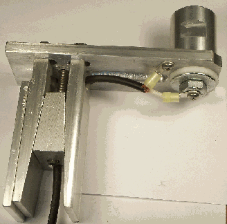
In terms of efficiency, trailer hitch mounting is the least desirable location. Contrary to popular opinion, running a ground strap to the frame will not negate this fact. If you doubt this, read the Antenna Efficiency article. Due to the extra ground losses involved, you must use extraordinary decoupling (large impedance chokes) to keep RF off the control and coax leads.
Whips and Masts
Whips, sometimes called stingers, are the flexible part of a mobile antenna extending from the top of the coil. They vary in length from 24 inches to about 72 inches. Folks who need a longer whip typically use an 8-foot CB whip and cut it down if needed — just don't forget to add a corona ball.
Some amateurs use bronze welding rods for whips and to build cap hats. Bronze works well, but it is easier to kink than stainless steel. 17-7 stainless steel is available in several sizes from Speedy Metals.
There are a few things to avoid with masts. First, don't use a quick disconnect at the base — the base is the point of maximum stress, and sooner or later even the best QD will fail. Those with foldovers should be avoided at all costs; it doesn't take long before the foldover becomes loose with predictable results. Hustler masts have an additional problem: the 3/8x24 studs are pressed into the aluminum, and they eventually become loose and in some cases fail altogether. Always use a base spring to minimize stress on the mast. If you notice any looseness on this or any other mobile antenna, replace or tighten the part before it comes off while you're driving down the freeway.
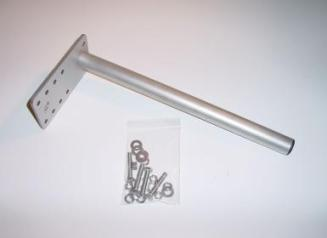
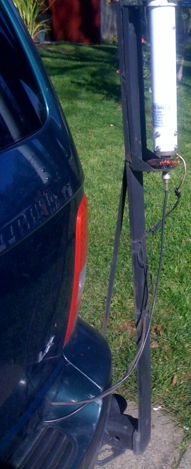
Odds and Ends
The 3/8x24 studs attaching the various parts of our antennas together are a recurring problem area. Several companies supply stainless steel ones which aren't much stronger than mild steel ones. A better solution: use 3/8x24 grade 8 or 9 bolts, cut their heads off with a Dremel cutoff tool, and polish the threads using a small grinding wheel. Ace Hardware and most Caterpillar dealers sell these high-grade bolts. You can almost guarantee your quarter panel will be ripped off before such a stud fails.
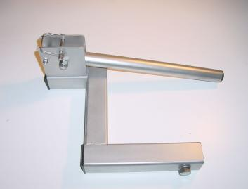
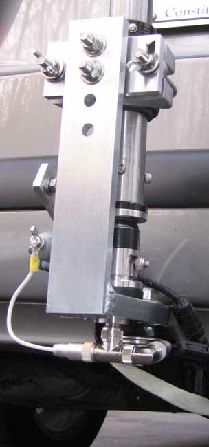
Modern Vehicle Considerations
Everything above was written with traditional steel-bodied vehicles in mind. Post-2015 vehicles present new complications that every installer must address before selecting a mount type.
Aluminum-body vehicles (Ford F-150 2015 and later, among others) require hardware that is either aluminum or properly isolated from the aluminum body panels. Ford has published guidelines on preventing galvanic corrosion — read and follow them. Most antenna mounting hardware uses steel in its brackets and attachment fittings; in some cases, this makes a particular brand or model of antenna unusable on an aluminum-body truck without significant hardware modification. When in doubt, contact your dealer's service staff before you drill anything.
Adhesive-bonded panels on modern aluminum vehicles must not be drilled through. Use factory bolt locations. Your vehicle's service manual identifies every factory ground point and bolt hole — on aluminum-body trucks these are specifically engineered to handle galvanic and oxide concerns. Use them.
Composite and non-conductive panels (carbon fiber, fiberglass, SMC) are simply not part of your ground plane. Mounting on or near these panels reduces your effective ground plane without any compensating benefit. Adjust your expectations and mounting location accordingly.
Electric and hybrid vehicles retain all the same mounting location logic as their ICE counterparts. Roof mounting is still the best, trailer hitch mounting is still the worst. The absence of an exhaust system removes one major noise source, but the motor inverter introduces broadband hash that makes good bonding and choking even more important, not less. Under no circumstances should any mounting hardware or bonding strap contact any orange-jacketed high-voltage cable or HV component.
Modern body-on-frame trucks with composite or fiberglass beds (GMC CarbonPro, for example) present a situation where the bed — normally one of the best mounting locations for pickup trucks — is RF-invisible. Move the antenna to the left rear of the cab instead, and accept that the effective ground plane ends at the rear of the cab.